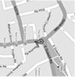

Give+Take
Your local, responsible boutique in East Dulwich
Give + Take is a new concept shop on Lordship Lane. We've been inspired by people choosing to recycle fashions and those creating high-quality products in support of good causes.

3 Lordship Lane
East Dulwich
London
SE22 8EW